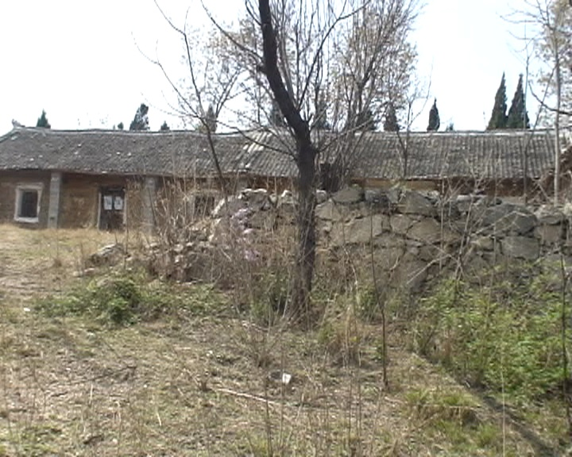

传统北方山村院落群 · 3D高精度数字孪生
全景聚落逐栋重构
六开间双套正房 · 西侧低矮红瓦附房 · 矩形干砌毛石院墙 · 门外连绵长坡 · 东厢房残垣 · 后檐双层白杨翠柏
实景视频对照
晴朗正午
漫游漫步视角
1. 双联正房与石围墙大院
00:56 院落全貌
2. 堂屋拱券大门
03:00 斑驳门套与门神
3. 西套木门与瓦垛
02:30 青瓦整齐堆码
4. 西侧红瓦附房紧邻
01:44 紧挨正房/砖叠柱/柴堆
5. 东次间木梯条凳
03:10 靠墙斜梯
6. 房舍夹角与东厢房
01:05 夹角通透无它房
7. 西侧山坡桃花果园
02:20 果林与西坡全景
8. 后檐翠柏夹道
08:15 背风防风绿篱
9. 后山俯瞰双坡顶
05:20 后山林木与聚落全景
10. 院门外长坡与院落全景
00:20 门外连绵长坡
实景视频与建筑特征对照
×

M2U00577.MPG · 00:56
双联正房全貌 (00:56)
建筑规制：
双联排六开间硬山双坡顶，面宽约19.2米，进深约4.8米。
廊柱系统：
7根方形水泥空心砌块柱贯通排列，双层烧结实心红砖基座防潮。
构件细节：
中次间窗下整齐码放长瓦垛与红砖压顶，东次间斜靠木梯与长条凳。
3D场景交互操作
旋转观察：
按住鼠标左键拖动
平移视角：
按住鼠标右键拖动
缩放视图：
滑动鼠标滚轮
第一人称漫步：
点击右上角“漫游漫步视角”或按键 [V]，使用 W/A/S/D 漫步
视角操作:
鼠标左键
旋转 ·
右键
平移 ·
滚轮
缩放
聚落探索:
点击底部按钮
平滑运镜至正房、西邻院落、后檐夹道等